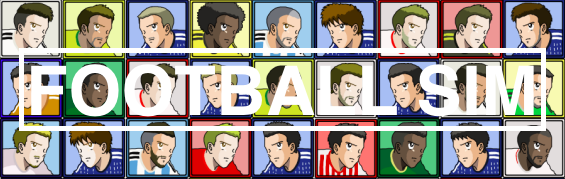

シングルマッチ
お好みのチームで試合を自由にシミュレート！
2018 ロシア 〜日本代表編〜
キックオフ!!
スコアランキングトップ100
総チャレンジ回数
: {{pcount}}
総GL突破回数
: {{tcount}}
総優勝回数
: {{vcount}}
Tweet
シェア
■アップデート内容
2018年12月5日
・シングルマッチ実装
2018年8月14日
・日本代表候補に内田篤人、今野泰幸、中村俊輔、都倉賢を追加
2018年7月27日
・決勝Tの対戦相手としてスウェーデン代表及びクロアチア代表を追加
2018年7月18日
・フランス代表及びブラジル代表スタメンのアップデート
2018年7月13日
・イングランド代表スタメンのアップデート
2018年7月5日
・ベルギー代表スタメンのアップデート
2018年7月1日
・Hグループ勝敗表のアップデート
・ポーランド代表スタメンのアップデート
2018年6月27日
・最後の設定を引き継いでの再チャレンジ機能実装
・セネガル代表スタメンのアップデート
2018年6月25日
・コロンビア代表スタメンのアップデート
2018年6月13日
・日本代表デフォルト設定をパラグアイ戦のものにアップデート
2018年6月9日
・日本代表デフォルトスタメン/フォーメーション更新
・広告枠の設置
2018年6月5日
・ポイント＆ランキング機能実装
2018年6月2日
・日本代表デフォルト23名及びスタメンのアップデート
2018年4月28日
・一部マッチアップが正常に行われないバグの修正
2018年4月26日
・試合の結果がズレるバグの修正
・試合中に設定ボタンが押せなくなるバグの修正
2018年4月24日
・β版を公開
■今後の主なアップデート予定
・日本代表選手の追加
・戦術/キープレイヤー等のバランス調整
・日本以外の国でのプレー実装
・選手別デュエル勝率などの試合後スタッツ追加
・対戦相手(NPC)側の選手交代の実装
■フットボールシムとは
フットボールシムとは、サッカーの監督として試合を行うサッカーシミュレータです。各選手には30項目以上の能力パラメータが設定されており、他にも戦術やフォーメーションなどの選択も試合の結果に影響を及ぼします。
不具合を確認された場合は、twitterアカウント(
@Iwasaki18M
)までご連絡お願いします。また、その他要望等ご意見も同アカウントにて随時受け付けております。
■「サッカー×インターネット」を通じて社会に貢献
このウェブサイトは「サッカー インターネット」を通じて、社会に貢献することを目的とした非営利サイトです。
今後、このウェブサイトで得られた収益は、サッカー関連の団体へ寄付を行うことを目標としています。活動報告は随時このサイトにアップする予定です。
Version 0.3.9